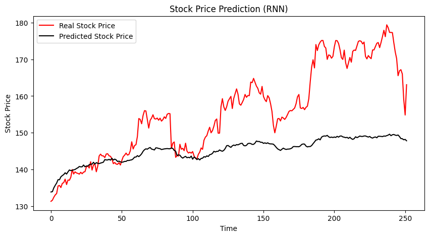
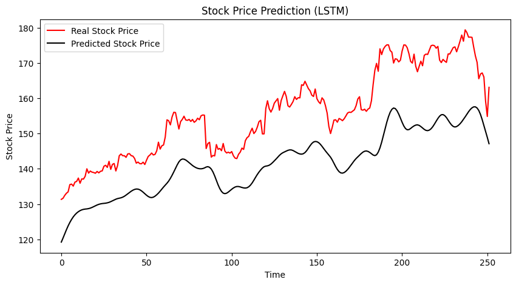

Comparing Neural Networks for Stock Price Forecasting
This project explored how different neural network architectures model financial time series. Using Python and TensorFlow/Keras, I compared a vanilla recurrent neural network (RNN), a long short-term memory network (LSTM), and a conditional variational autoencoder (VAE) on five years of stock data.
Approach
I compared forecasts for Apple, Amazon, Alphabet, Netflix, and NVIDIA, varying epochs and batch size. The archived implementation selects GOOGL and predicts the next opening price from the previous 40 trading observations.
The code uses an ordered 80/20 training/test split and fits min–max scaling on training prices only. Test windows include the preceding observed prices, making this a rolling one-step prediction task.
Implementation
- RNN and LSTM: four recurrent layers of 50 units, each followed by 20% dropout, trained with Adam and mean squared error.
- VAE-based forecaster: an LSTM encoder, a four-dimensional latent representation, and a dense decoder. A custom training step combines prediction error with weighted KL divergence; inference decodes the latent mean.
- Evaluation: RMSE and MAE compared with a last-observed-price baseline.
The custom loss and gradient update are the core of the variational model:
kl_loss = -0.5 * tf.reduce_mean(
tf.reduce_sum(
1 + z_log_var - tf.square(z_mean) - tf.exp(z_log_var),
axis=-1,
)
)
total_loss = pred_loss + (self.kl_weight * kl_loss)
grads = tape.gradient(total_loss, self.trainable_weights)
self.optimizer.apply_gradients(zip(grads, self.trainable_weights))Excerpt with formatting adjusted for readability. The archived implementation uses a KL weight of 0.001.
View source Open in Colab Download notebook
The notebook requires all_stocks_5yr.csv and the listed Python packages. It includes setup notes but no dataset or saved outputs.
An illustrative comparison
These AAPL plots show one experimental setting from the project. The vanilla RNN produces a relatively flat forecast, while the LSTM follows more of the variation in the observed series. Both models still miss substantial price movements.




Red: observed prices. Black: model predictions. Original plots from the project.
Takeaways
The experiments helped me understand how architecture and training choices affect time-series forecasts. In this example, the LSTM follows the observed series more closely than the vanilla RNN, though the forecasts remain smoother than the actual prices.
The archived code documents preprocessing and evaluation, but the dataset and saved scores are not included. These earlier AAPL plots illustrate model behavior; they are not outputs from a fresh run of the GOOGL code.